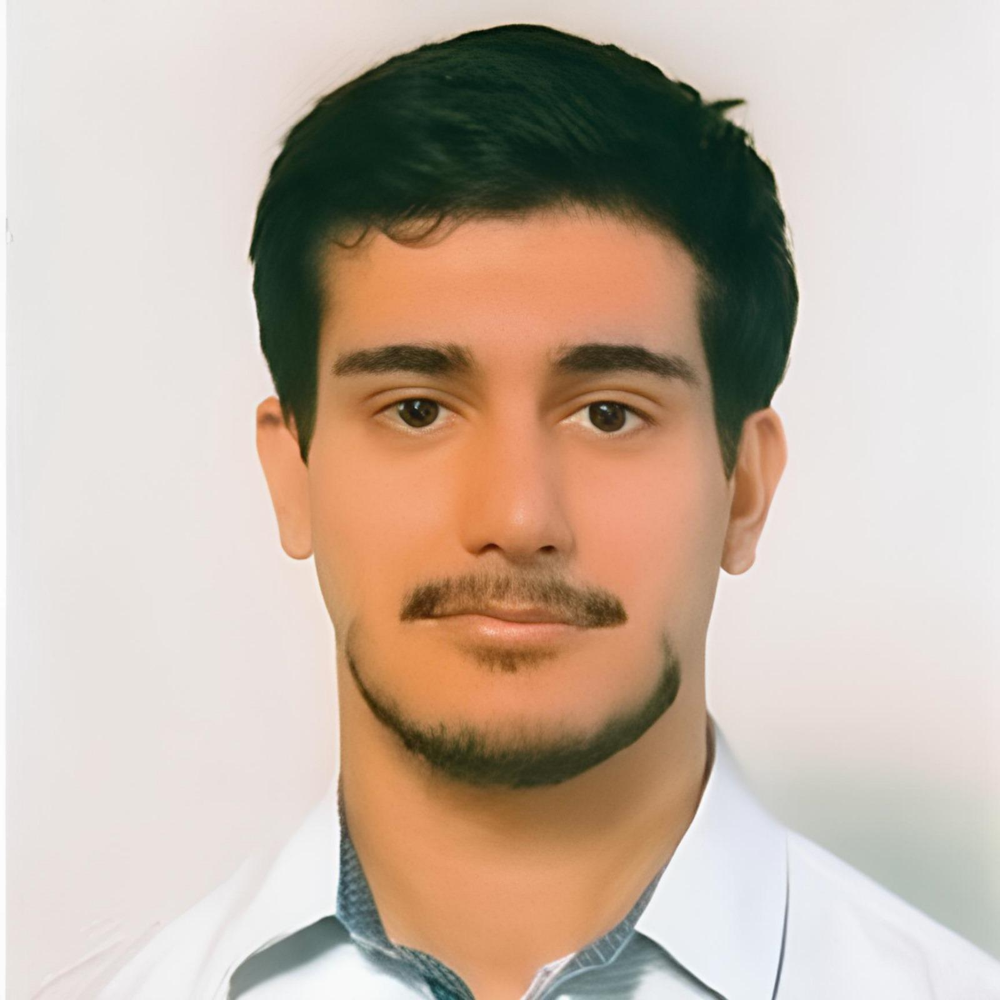

My research focuses on goal-oriented and semantic communications, where information is transmitted according to its significance for the task at the receiver, and on learning-based control of resource-constrained wireless networks. I combine learning-based and model-based decision making: fully distributed (multi-agent) and hierarchical multi-armed bandits, reinforcement learning, and distributed convex optimization, together with stochastic channel models such as Markov chains, hidden Markov models, and Kalman filtering. I apply these tools to link adaptation, feedback scheduling, routing, and congestion control, with timeliness measured by the Age of Information.
I first developed these methods for the Internet of Underwater Things, with channel models derived from real experimental traces of the LOON testbed of the NATO Centre for Maritime Research and Experimentation and protocols evaluated in network simulation. At Auburn University, I am extending them to NextG wireless testbeds for semantic and goal-oriented communication, including the SafeStep@AU pedestrian safety monitoring testbed, which combines computer vision on live traffic-camera feeds with a semantic transceiver based on the variational information bottleneck, and to edge-intelligence platforms for disaster response. I am co-inventor of two U.S. provisional patent applications on semantic and goal-oriented communications, and I mentor three Ph.D. students.
I received my Ph.D. in Information and Communication Technologies from the University of Palermo, Palermo, Italy, in December 2025, after a visiting period at Auburn University in 2025. I hold an M.Sc. in Telecommunications Engineering and a B.Sc. in Electronic Engineering, both from the University of Catania, Catania, Italy. My paper on bandit-based Adaptive Modulation in Underwater Acoustic Networks (AMUSE) was selected among the Best Papers of the IEEE International Conference on Communications (ICC 2024), and in 2023 I received the Francesco Carassa Award for the best poster at the Annual Meeting of the Italian National Group on Telecommunications and Information Theory (GTTI), Rome, Italy. I served as Technical Program Committee Chair of the Workshop on Modeling and Optimization for Semantic Communications (MOSC 2026) and as Finance and Registration Chair of the International Symposium on Modeling and Optimization in Mobile, Ad Hoc, and Wireless Networks (WiOpt 2026).
My work broadly encompasses the theoretical design and practical implementation of adaptive networking systems. Key topics of interest include:
Email: anp0105@auburn.edu
Office: Shelby Center for Engineering Technology, 345 West Magnolia Avenue, Auburn, AL 36849, USA